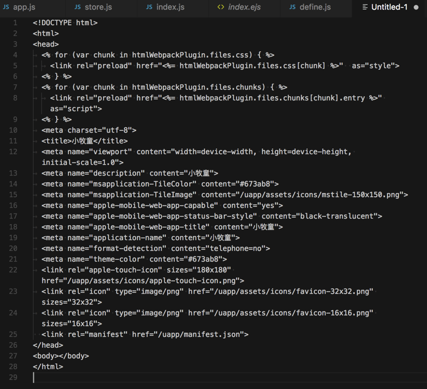
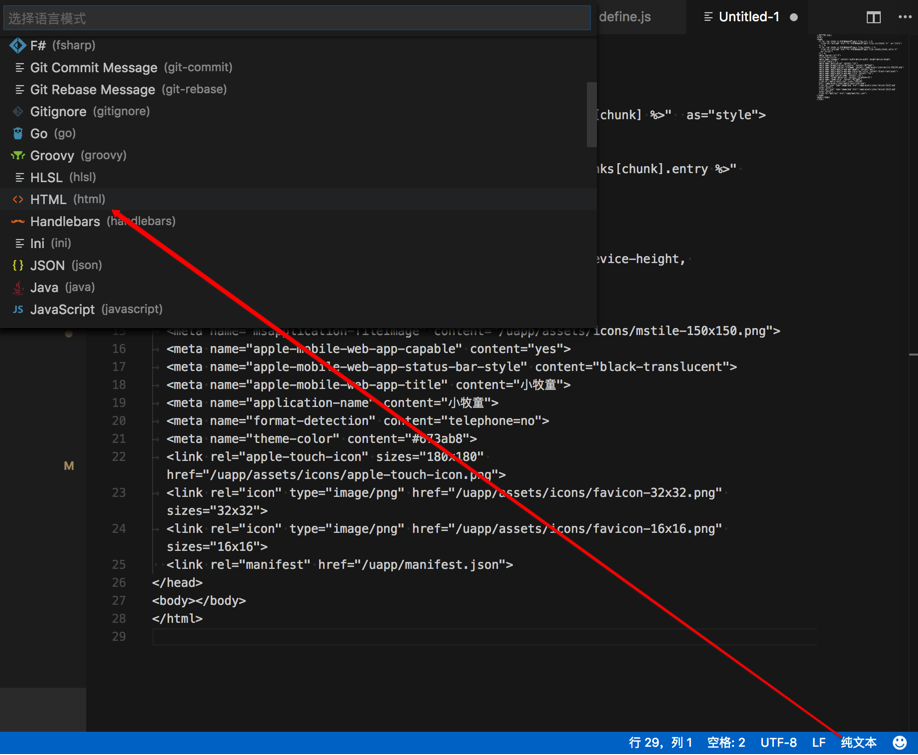

语法高亮
设置文件和代码的语法高亮：
对于未保存的文件时，需要设置文件类型-〉才能使得语法高亮生效
比如新建文件，粘贴html代码，此时代码无法自动高亮

点击右下角的纯文本，在弹出的语言列表中选择HTML：

即可看到HTML代码高亮的效果了：

支持log类型的语法高亮
无意间发现，VSCode连log格式，都可以支持，都可以语法高亮：

很是方便查看内容。
另外一个截图：

-》后来不知道为何突然log文件丢失语法高亮了
所以又去找了个插件：
Output Colorizer

安装后，效果也很不错：